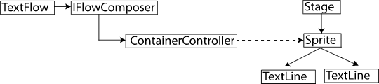

| Package | flashx.textLayout.compose |
| Interface | public interface IFlowComposer |
| Implementors | StandardFlowComposer |
| Language Version: | ActionScript 3.0 |
| Runtime Versions: | Flash Player 10, AIR 1.5 |
Text flows displayed with a flow composer implementation can be dynamic and interactive. A flow composer manages one or more display controller. Each controller is associated with a display object container (such as a Sprite) through which the lines created for the text flow are ultimately displayed. The following diagram illustrates the relationship between TextFlow, IFlowComposer, ContainerController, and DisplayObjectContainer objects:

A flow composer calculates which portion of a text flow fits in each container and adds the appropriate text lines to the container's display object. The IFlowComposer interface defines separate methods for layout calculations and for updating the display. IFlowComposer also defines methods for incrementally composing and updating a text flow. These methods can be used to avoid blocking the user interface when updating long text flows.
In addition to managing text composition and display, a flow composer controls which container has focus, manages the display of the selection highlight (which can cross container boundaries), and provides direct access to all the TextLine objects in the flow.
To use an IFlowComposer implementation, assign an instance of that implementation to the
flowComposer property of a TextFlow object. Call the updateAllControllers()
method to lay out and display the text in the containers attached to the flow composer.
Note: For simple, static text flows, you can also use the one of the text line factory classes. These factory classes will typically create lines with less overhead than a flow composer, but do not support editing, dynamic changes, or user interaction.
Related API Elements
FlowComposerBase
StandardFlowComposer
TextFlow
StringTextLineFactory
TextFlowTextLineFactory
| Property | Defined By | ||
|---|---|---|---|
| composing : Boolean [read-only]
True, if the flow composer is currently performing a composition operation. | IFlowComposer | ||
| damageAbsoluteStart : int [read-only]
The first invalid position in the root element, as an absolute position from the start of the flow. | IFlowComposer | ||
| numControllers : int [read-only]
The number of containers assigned to this IFlowComposer instance. | IFlowComposer | ||
| numLines : int [read-only]
The total number of lines composed in the flow. | IFlowComposer | ||
| rootElement : ContainerFormattedElement [read-only]
The root element associated with this IFlowComposer instance. | IFlowComposer | ||
| swfContext : ISWFContext
The ISWFContext instance to be used for calls that must be made in a specific SWF context
Implementations of IFlowComposer should allow this property to be set so that users
of the interface can create lines in a different SWF context than the one containing the
implementation. | IFlowComposer | ||
| Method | Defined By | ||
|---|---|---|---|
Adds a controller to this IFlowComposer instance. | IFlowComposer | ||
Adds a controller to this IFlowComposer instance at the specified index. | IFlowComposer | ||
Calculates how many lines are necessary to display the content in the root element of the flow and the positions of these
lines in the flow's display containers. | IFlowComposer | ||
Composes the content of the root element up to and including the container at the specified index. | IFlowComposer | ||
Composes the content of the root element up to the specified position. | IFlowComposer | ||
Mark lines as damaged and needing a recompose. | IFlowComposer | ||
Returns the index of the controller containing the content at the specified position. | IFlowComposer | ||
findLineAtPosition(absolutePosition:int, preferPrevious:Boolean = false):flashx.textLayout.compose:TextFlowLine
Returns the TextFlowLine object containing the content at the specified position. | IFlowComposer | ||
Returns the sequential line number of the TextFlowLine object that contains the content at the specified position. | IFlowComposer | ||
Returns the ContainerController object at the specified index. | IFlowComposer | ||
Returns the index of the specified ContainerController object. | IFlowComposer | ||
Returns the line with the specified line number. | IFlowComposer | ||
Called by the TextFlow when the interaction manager changes. | IFlowComposer | ||
Indicates whether any TextFlowLine objects between the beginning of the flow and the line containing the content at
the specified position are marked as damaged. | IFlowComposer | ||
Removes all controllers from this IFlowComposer instance. | IFlowComposer | ||
Removes a controller from this IFlowComposer instance. | IFlowComposer | ||
Removes the controller at the specified index from this IFlowComposer instance. | IFlowComposer | ||
Sets the focus to the container that contains the location specified by the absolutePosition
parameter. | IFlowComposer | ||
| IFlowComposer | |||
Composes the content of the root element and updates the display. | IFlowComposer | ||
Update the lengths in the lines to maintain mapping to the TextFlow. | IFlowComposer | ||
Composes and updates the display up to and including the container at the specified index. | IFlowComposer | ||
composing | property |
damageAbsoluteStart | property |
numControllers | property |
numLines | property |
numLines:int [read-only] | Language Version: | ActionScript 3.0 |
| Runtime Versions: | Flash Player 10, AIR 1.5 |
The total number of lines composed in the flow. By default TLF does not compose the entire flow and this value may be innacruate. Use composeToPosition to get all lines composed.
Implementation
public function get numLines():introotElement | property |
rootElement:ContainerFormattedElement [read-only] | Language Version: | ActionScript 3.0 |
| Runtime Versions: | Flash Player 10, AIR 1.5 |
The root element associated with this IFlowComposer instance.
Only a TextFlow object can be a root element.
Implementation
public function get rootElement():ContainerFormattedElementRelated API Elements
swfContext | property |
swfContext:ISWFContext| Language Version: | ActionScript 3.0 |
| Runtime Versions: | Flash Player 10, AIR 1.5 |
The ISWFContext instance to be used for calls that must be made in a specific SWF context
Implementations of IFlowComposer should allow this property to be set so that users of the interface can create lines in a different SWF context than the one containing the implementation. A default implementation of ISWFContext should also be supplied.
Implementation
public function get swfContext():ISWFContext public function set swfContext(value:ISWFContext):voidRelated API Elements
addController | () | method |
public function addController(controller:ContainerController):void| Language Version: | ActionScript 3.0 |
| Runtime Versions: | Flash Player 10, AIR 1.5 |
Adds a controller to this IFlowComposer instance.
The container is added to the end of the container list.
Parameters
controller:ContainerController — The ContainerController object to add.
|
addControllerAt | () | method |
public function addControllerAt(controller:ContainerController, index:int):void| Language Version: | ActionScript 3.0 |
| Runtime Versions: | Flash Player 10, AIR 1.5 |
Adds a controller to this IFlowComposer instance at the specified index.
The list of controllers is 0-based (the first controller has an index of 0).
Parameters
controller:ContainerController — The ContainerController object to add.
| |
index:int — A numeric index that specifies the position in the controller list at which to insert the ContainerController object.
|
compose | () | method |
public function compose():Boolean| Language Version: | ActionScript 3.0 |
| Runtime Versions: | Flash Player 10, AIR 1.5 |
Calculates how many lines are necessary to display the content in the root element of the flow and the positions of these lines in the flow's display containers.
Implementations of this method should not update the display, but should save the results so that subsequent
calls to compose() or updateAllControllers() do not perform an additional recomposition
if the flow content has not changed.
If the contents of any container have changed, the method must return true.
Boolean — true if anything changed.
|
Related API Elements
composeToController | () | method |
public function composeToController(index:int):Boolean| Language Version: | ActionScript 3.0 |
| Runtime Versions: | Flash Player 10, AIR 1.5 |
Composes the content of the root element up to and including the container at the specified index.
If the contents of any container up to and including the container at the specified
index has changed, the method returns true. If index is greater than the number of controllers
(or not specified), then all containers are composed.
Parameters
index:int (default = NaN) |
Boolean — true if anything changed.
|
Related API Elements
composeToPosition | () | method |
public function composeToPosition(absolutePosition:int):Boolean| Language Version: | ActionScript 3.0 |
| Runtime Versions: | Flash Player 10, AIR 1.5 |
Composes the content of the root element up to the specified position.
If the contents of any container up to and including the container holding the content at the specified
position has changed, the method returns true. If absolutePosition is greater than the length of the TextFlow
(or not specified), then the entire flow is composed.
Parameters
absolutePosition:int (default = NaN) |
Boolean — true if anything changed.
|
Related API Elements
damage | () | method |
public function damage(startPosition:int, damageLength:int, damageType:String):void| Language Version: | ActionScript 3.0 |
| Runtime Versions: | Flash Player 10, AIR 1.5 |
Mark lines as damaged and needing a recompose.
Parameters
startPosition:int — beginning of range to damage
| |
damageLength:int — number of characters to damage
| |
damageType:String — type of damage. One of flashx.textLayout.compose.FlowDamageType
|
Related API Elements
findControllerIndexAtPosition | () | method |
public function findControllerIndexAtPosition(absolutePosition:int, preferPrevious:Boolean = false):int| Language Version: | ActionScript 3.0 |
| Runtime Versions: | Flash Player 10, AIR 1.5 |
Returns the index of the controller containing the content at the specified position.
A position can be considered to be the division between two characters or other elements of a text flow. If
the value in absolutePosition is a position between the last character of one
container and the first character of the next, then the preceding container is returned if
the preferPrevious parameter is set to true and the later container is returned if
the preferPrevious parameter is set to false.
The method must return -1 if the content at the specified position is not in any container or is outside the range of positions in the text flow.
Parameters
absolutePosition:int — The position of the content for which the container index is sought.
| |
preferPrevious:Boolean (default = false) |
int — the index of the container controller or -1 if not found.
|
findLineAtPosition | () | method |
public function findLineAtPosition(absolutePosition:int, preferPrevious:Boolean = false):flashx.textLayout.compose:TextFlowLine| Language Version: | ActionScript 3.0 |
| Runtime Versions: | Flash Player 10, AIR 1.5 |
Returns the TextFlowLine object containing the content at the specified position.
A position can be considered to be the division between two characters or other elements of a text flow. If
the value in absolutePosition is a position between the last element of one
line and the first element of the next, then the preceding line is returned if
the preferPrevious parameter is set to true and the later line is returned if
the preferPrevious parameter is set to false.
Parameters
absolutePosition:int — The position of the content for which you want the TextFlowLine object.
| |
preferPrevious:Boolean (default = false) |
flashx.textLayout.compose:TextFlowLine — the TextFlowLine containing the content at the specified position, or null if not found.
|
findLineIndexAtPosition | () | method |
public function findLineIndexAtPosition(absolutePosition:int, preferPrevious:Boolean = false):int| Language Version: | ActionScript 3.0 |
| Runtime Versions: | Flash Player 10, AIR 1.5 |
Returns the sequential line number of the TextFlowLine object that contains the content at the specified position.
The number of the first line is 0 and the number of the last line is equal to the number of lines minus one.
If the position specified in absolutePosition is past the end of the text flow, this method must return
the number that will be assigned to the next new line added to the text flow (which is equal to the number of current lines).
A position can be considered to be the division between two characters or other elements of a text flow. If
the value in absolutePosition is a position between the last line of one
container and the first line of the next, then the preceding container is returned if
the preferPrevious parameter is set to true and the later container is returned if
the preferPrevious parameter is set to false.
Parameters
absolutePosition:int — The position of the content for which you want the text line.
| |
preferPrevious:Boolean (default = false) |
int — the index of the text line at the specified position. If not found, treats as past the end and returns the
number of lines.
|
getControllerAt | () | method |
public function getControllerAt(index:int):ContainerController| Language Version: | ActionScript 3.0 |
| Runtime Versions: | Flash Player 10, AIR 1.5 |
Returns the ContainerController object at the specified index.
Parameters
index:int — The index of the ContainerController object to return.
|
ContainerController — the ContainerController object at the specified position.
|
getControllerIndex | () | method |
public function getControllerIndex(controller:ContainerController):int| Language Version: | ActionScript 3.0 |
| Runtime Versions: | Flash Player 10, AIR 1.5 |
Returns the index of the specified ContainerController object.
Parameters
controller:ContainerController — A reference to the ContainerController object to find.
|
int — the index of the specified ContainerController object or -1 if the controller is not attached to this flow composer.
|
getLineAt | () | method |
public function getLineAt(index:int):flashx.textLayout.compose:TextFlowLine| Language Version: | ActionScript 3.0 |
| Runtime Versions: | Flash Player 10, AIR 1.5 |
Returns the line with the specified line number.
The list of lines is numbered from zero to the number of lines minus one. If the value in index
is outside the bounds of the list of lines, then this function returns null.
Parameters
index:int — The line number of the TextFlowLine object to return.
|
flashx.textLayout.compose:TextFlowLine — the TextFlowLine with the specified line number, or null, if not found.
|
interactionManagerChanged | () | method |
public function interactionManagerChanged(newInteractionManager:ISelectionManager):void| Language Version: | ActionScript 3.0 |
| Runtime Versions: | Flash Player 10, AIR 1.5 |
Called by the TextFlow when the interaction manager changes.
Implementations of IFlowComposer should update event listeners and properties that reference the interaction manager.
Parameters
newInteractionManager:ISelectionManager — The new ISelectionManager instance.
|
isDamaged | () | method |
public function isDamaged(absolutePosition:int):Boolean| Language Version: | ActionScript 3.0 |
| Runtime Versions: | Flash Player 10, AIR 1.5 |
Indicates whether any TextFlowLine objects between the beginning of the flow and the line containing the content at the specified position are marked as damaged.
Parameters
absolutePosition:int — the last position in the area of interest
|
Boolean — true if any of the TextFlowLine objects from the start of the flow up to the line containing the content at
absolutePosition are marked as damaged.
|
removeAllControllers | () | method |
public function removeAllControllers():void| Language Version: | ActionScript 3.0 |
| Runtime Versions: | Flash Player 10, AIR 1.5 |
Removes all controllers from this IFlowComposer instance.
removeController | () | method |
public function removeController(controller:ContainerController):void| Language Version: | ActionScript 3.0 |
| Runtime Versions: | Flash Player 10, AIR 1.5 |
Removes a controller from this IFlowComposer instance.
Parameters
controller:ContainerController — The ContainerController instance to remove.
|
removeControllerAt | () | method |
setFocus | () | method |
public function setFocus(absolutePosition:int, preferPrevious:Boolean = false):void| Language Version: | ActionScript 3.0 |
| Runtime Versions: | Flash Player 10, AIR 1.5 |
Sets the focus to the container that contains the location specified by the absolutePosition
parameter.
It is the responsibility of the implementation to define what setting the focus means. For example, an
implementation could use the built-in focus property of the Stage object (as long as the
containers were InteractiveObjects) or the implementation could manage the focus some other way.
Parameters
absolutePosition:int — Specifies the position in the text flow of the container to receive focus.
| |
preferPrevious:Boolean (default = false) |
Related API Elements
setRootElement | () | method |
public function setRootElement(newRootElement:ContainerFormattedElement):voidParameters
newRootElement:ContainerFormattedElement |
updateAllControllers | () | method |
public function updateAllControllers():Boolean| Language Version: | ActionScript 3.0 |
| Runtime Versions: | Flash Player 10, AIR 1.5 |
Composes the content of the root element and updates the display.
Text layout is typically conducted in two phases: composition and display. In the composition phase,
the flow composer calculates how many lines are necesary to display the content as well as the position of these
lines in the flow's display containers. In the display phase,
the flow composer updates the display object children of its containers. The updateAllControllers()
method is expected to carry out both phases. An efficient implementation will keep track of changes to content
so that a full cycle of composition and display is only performed when necessary.
This method updates all the text lines and the display list immediately and synchronously.
If the contents of any container is changed, the method must return true.
Boolean — true if anything changed.
|
updateLengths | () | method |
public function updateLengths(startPosition:int, deltaLength:int):void| Language Version: | ActionScript 3.0 |
| Runtime Versions: | Flash Player 10, AIR 1.5 |
Update the lengths in the lines to maintain mapping to the TextFlow.
Parameters
startPosition:int — beginning of change in length
| |
deltaLength:int — change in number of characters.
|
updateToController | () | method |
public function updateToController(index:int):Boolean| Language Version: | ActionScript 3.0 |
| Runtime Versions: | Flash Player 10, AIR 1.5 |
Composes and updates the display up to and including the container at the specified index.
The updateToController() method is expected to both compose the content and
update the display so that all containers up to and including the container at the specified index are current.
For example, if you have a chain of twenty containers and specify an index of 10,
updateToController() must ensures that the first through the tenth (indexes 0-9) containers
are composed and displayed. Composition can stop at that point. If controllerIndex
is -1 (or not specified), then all containers should be updated.
This method updates all the text lines and the display list immediately and synchronously.
If the contents of any container is changed, the method must return true.
Parameters
index:int (default = NaN) |
Boolean — true if anything changed.
|
Thu Dec 4 2014, 05:50 PM -08:00